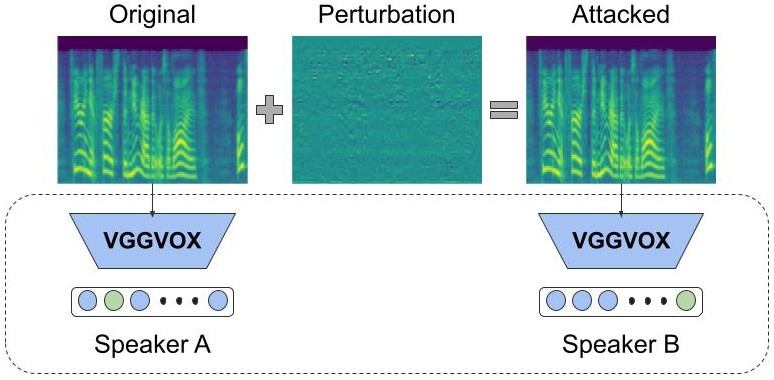

Adversarial Robustness of Mel based speaker recognition systems
Abstract:
Convolutional neural networks (CNN) applied to Mel spec-trograms began to dominate the landscape of speaker recognition systems. Correspondingly, it is also important to evaluate their robustness to adversarial attacks that remains unexplored for end-to-end trained CNNs for speaker recognition. Our work addresses this gap and investigates variations of the iterative Fast Gradient Sign Method (FGSM) to generate adversarial attacks. We observe that a vanilla iterative FGSM can flip the identity of each speaker sample to every other speaker in the LibriSpeech dataset. Surprisingly, the effort required to flip the identity is uncorrelated with the distance between the original and target speaker embeddings. Furthermore, we propose adversarial attacks specific to Mel spectrogram features by (a) limiting the number of pixels attacked, (b) restricting changes to specific frequency bands, and (c) restricting changes to particular time duration. Using thorough qualitative and quantitative results, we demonstrate the fragility and non-intuitive nature of the current CNN-based speaker recognition systems, where the predicted speaker identities can be flipped without any perceptible changes in the audio.
1. Adversarial attack on speaker recognition system

2. Demo of Vanilla FGSM, top-k and top-2k attacks:
A sample of particular speaker is attacked to the given target speaker with different attacks.
Original audio
Target speaker
Vanilla FGSM
Top-k
Top-2k
3. Demo of attacking different time bands.
A sample of a speaker is attacked only the particular time frames to the given target speaker.
Position
Original audio
Target speaker
t=2
t=30
Start
Start
Middle
Middle
End
End
4. Demo of attacking frequency band:
A sample of particular speaker is attacked only on certain frequency bands to the given target speaker.